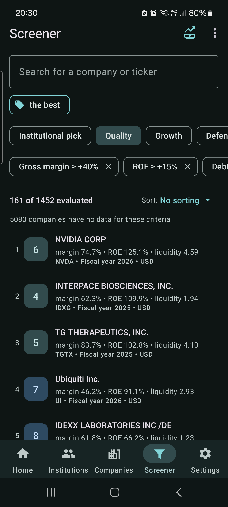
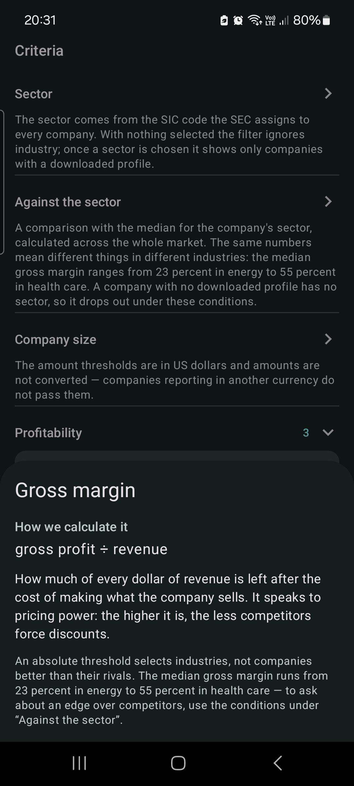
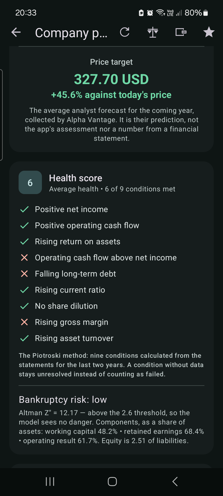
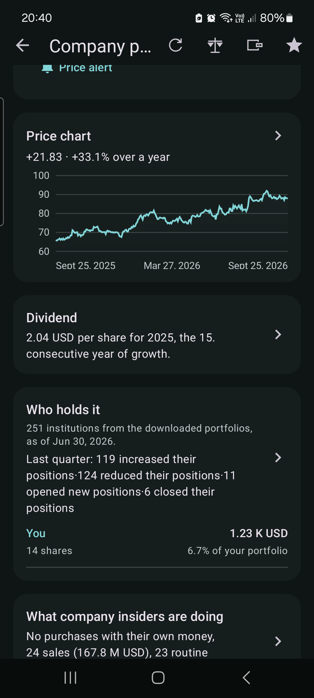
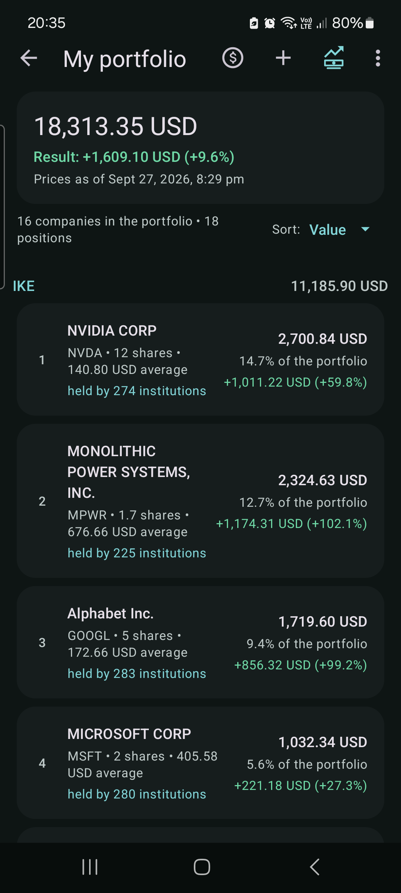

Screen 6,500 companies on what they actually filed, see which funds hold them, and keep your own portfolio next to the data. On your phone, without an account.
Everything comes from documents filed with the U.S. Securities and Exchange Commission. The app shows numbers and says where they came from.
27 criteria in 10 groups — margins, return on equity, debt, liquidity, growth over 5 and 10 years, dividend streaks, health score, bankruptcy risk and institutional interest. Six one-tap strategies or your own, saved under a name.
Portfolios from Form 13F, position by position, with quarter-to-quarter changes: who bought, who sold, who opened a new position — from the largest filers down to boutique funds.
Ten years of annual reports and quarterly numbers, ten-year charts, the full balance sheet, and the “Item 1. Business” section in the original wording.
Tap a figure to see the formula, the statement lines behind it, their XBRL tags and the filing they came from — with a link straight to the SEC EDGAR archive.
Positions across several brokerage accounts, today's value, result against your purchase cost, share of portfolio and a chart — in your own currency.
Price alerts, an earnings calendar for the companies you hold or watch, and a home screen widget with the value of your portfolio.
Five steps from “I have no idea what to look at” to “I know why this company is on my list”.
Open the Screener and tap one of the six ready strategies — Quality, Growth, Defensive, Dividend, Institutional pick, Strong fundamentals. Each one sets several thresholds at once, and you can move any of them afterwards.
The counter says “161 of 1,452 evaluated” rather than just “161 results”, because companies that have not filed a statement cannot be judged. Finlume tells you how many those are instead of quietly dropping them.

Every criterion has an icon next to its name. It opens the formula, an explanation of how to read the value — what counts as low, what as high — and the catch.
Current ratio, for instance, does not exist for banks and insurers: they do not split the balance sheet into current and non-current. With that threshold on, they drop out together with the companies that fail it, and the app says so.

Revenue, profit and cash flow for the fiscal year or the trailing twelve months; ten-year charts; ratios against the median of the company's sector; market valuation once you add your own quote key.
The health score answers nine yes-or-no questions from the Piotroski method, and the bankruptcy risk comes from the Altman Z'' model — both with the numbers that produced them, not just a verdict.

On a company's page you see how many institutions hold it, how many added and how many cut since the previous quarter — and your own position in the same list, so the comparison is in one place.
Every filer also has its own profile: the full portfolio, position by position, with what changed quarter to quarter.

Enter positions from as many brokerage accounts as you use. Finlume values them with the quotes it already has, shows the result against your purchase cost and the share of each position — converted to the currency you picked.
Nothing is sent anywhere. The portfolio lives on your phone.

All SEC data is free, forever. The full version adds the tools built on top of it — once, without a subscription.
From SEC EDGAR — the public archive of filings made by companies and institutions to the U.S. market regulator. Annual and quarterly statements, Form 13F portfolios and Form 4 insider transactions. Finlume reads them, it does not interpret them.
The SEC publishes filings, not share prices. Quotes, analyst targets, price history and model-written briefs come from outside providers — Finnhub, Alpha Vantage, Twelve Data and Google AI Studio. You enter your own keys, so you pay those providers directly (their free tiers are enough for normal use) and nothing goes through us. These features keep working even after the trial ends.
No. There is no account, no analytics and no ads. Your portfolio, watchlist, price alerts and API keys stay on the phone. The only thing that leaves it are requests to the SEC and to the providers whose keys you entered.
As current as what has been filed. Annual and quarterly statements appear once a company submits them. Form 13F portfolios describe positions as of the end of the previous quarter — that is what the law requires, not a limitation of the app.
That depends on how many institutions you follow. The slider goes up to 1,000, and each portfolio is stored on the phone. Company statements for the whole market take a few dozen megabytes; a thousand institutional portfolios take considerably more.
English, Polish, Spanish, Portuguese, German, French, Japanese, Chinese and Korean — including number and date formats.